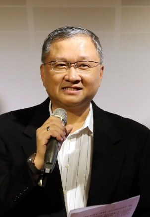
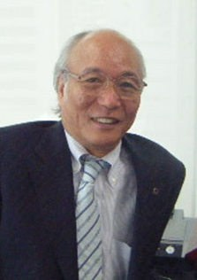
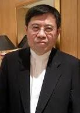
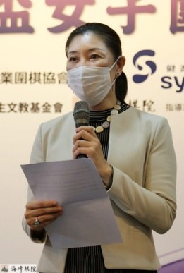

自 2008 年創會至今，歷任理事長與任內推動的賽事、交流與圍棋推廣。

2025 年 – 至今（曾任第五、六屆理事長，2017–2021）
何信仁先生於 2017 年出任第五屆理事長，任內開辦快棋爭霸戰與韓國國家隊來臺交流賽， 並持續補助精銳棋士赴海外研修與參加國際賽預選。 2025 年再度接任第九屆理事長，開辦龍星賽與玄樂盃， 並自 2026 年 8 月起補助精銳隊隊員訓練費用。
近年協會與海峰棋院等圍棋推廣單位合作、整合資源，加速推動圍棋發展， 致力於臺灣的職業圍棋運動，提升臺灣在國際圍棋賽事的競爭力。
各任理事長任內開辦的賽事、交流賽與圍棋推廣活動。

2008 – 2012 · 創會理事長

2012 – 2017
2017 – 2021

2021 – 2025
2025 – 至今